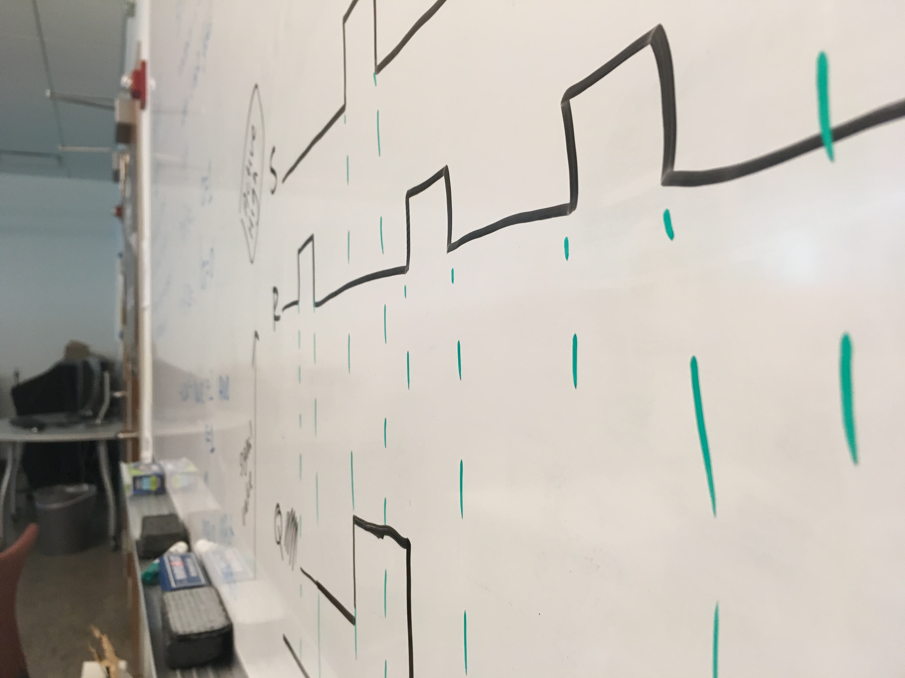

Sample Exams
Master these problems to ensure exam success.
Discover the magic of ones and zeros.
From 2018 to 2019, I had the joy of teaching Computer Systems and Assembly Language at the University of California, Santa Cruz. In this “computer engineering 101” course, I restructured the course materials and taught foundational concepts including binary, digital logic design, memory alignment, and assembly language.
This page contains the course material from that class to serve as a reference for anyone interested, and as an example of my work in education, documentation, and curriculum design.

I teach Computer Systems and Assembly language using fill-in-the-blank worksheets that I’ve designed. Students who manually write out notes are more likely to retain information presented in class over students who type notes.
These worksheets allow students to handwrite notes and maintain better engagement in class, rather than losing focus by copying slides. I include examples for students to work out both during lecture with their classmates, and outside of class.
history of computing, computing levels of abstraction
unary, grouping, positional, decimal, octal, hexadecimal, binary
MOSFET transistors, PMOS, NMOS, logic gates, inverter, and, or, nand, nor, xor, xnor, Venn diagrams
digital circuit examples, sum of products (SOP), product of sums (POS), minterms, maxterms, programmable logic array (PLA)
multiplexers, decoders, half adder, full adder, ripple-carry adder, ALU
Boolean identities, De Morgan's Law
SR latch, active high, active low, D latch, D flip-flop
signed numbers, sign magnitude, two’s complement, bias / excess notation
carry out, overflow, bitwise, reduction, shifts, rotate
fixed point, IEEE 754 single precision floating point
von Neumann architecture, memory, address space, addressibility, processing unit, control unit, input, output, memory
general purpose registers, assembler directives, data directives, labels, instruction format, instruction types, operate instructions, data movement (loads and stores), control flow instructions, little endian, big endian, memory alignment, pseudo instructions, instruction encoding
memory display, syscalls
register direct, immediate, register indirect, base + offset (displacement), PC relative, pseudo direct
stack, jump instructions, return address, subroutines
mips data path, r-type, i-type, j-type, pc, register file, alu, control unit
Write 250 words about the background, functionality, and social implications of an artifact from computer history. Create 1 - 3 slides on that artifact and present it to the class.
Get your ham radio license and attend 4 ucsc amateur radio club events.
Learn a new skill, or progress in a skill you have already worked on. Show documentation of your skill progression and journal about it four times throughout the quarter. Examples: juggling, drawing, singing, dancing, playing a musical instrument, movement.
Read the chapter “Intelligence as a Malleable Construct” from the Handbook of Intelligence and write a 500+ word essay. This assignment will have 3 parts: summary, reflection, and recommendations.